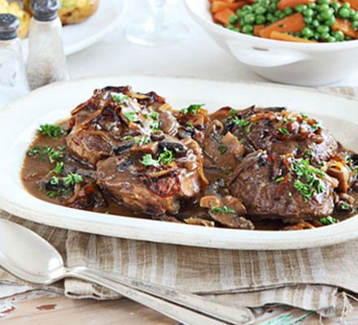

Braised Beef

Description
Follow our easy recipe for how to braise beef and achieve a beautifully tender result. Accompany with melting caramelised onions for a satisfying Sunday lunch
Ingredients
- 4 thick generous slices beef shin, about 700g/1lb 9oz
- plain flour, for dusting
- 2 tbsp sunflower oil
- 3 medium onions, halved and thinly sliced
- 2 tsp caster sugar
- 6 garlic cloves, sliced
- 700ml beef stock (made with 2 cubes)
- 3 tbsp Worcestershire sauce
- 4 large flat mushrooms, thickly sliced
chopped parsley, to serve
Preparing method
- Dust the beef in flour, then set aside. Heat the oil in a large pan. Add the onions and fry for 5 mins. Add the sugar and cook for 5-10 mins, stirring frequently, until the onions are caramelised. Stir in the garlic for the final few mins.
- Pour in the stock and stir in the Worcestershire sauce. Add the beef and mushrooms, then season, adding plenty of black pepper. Cover and cook gently for 2 hrs until the meat is tender. Can be chilled for up to 3 days. To freeze, cool and store in freezer bags. Thaw and reheat in a pan. Serve scattered with parsley.